Help Documentation edition: 2022/07/24 (v2.0.0100)
Version 2.0.0100
This software uses 7-Zip. Copyright © Igor Pavlov. This software uses OSCDIMG. Copyright © 1993, 2012 Microsoft Corporation. This software uses DISM. Copyright © Microsoft Corporation. Each component is covered by its license terms
This documentation will help you get started with the Windows 11 Manual Installer
The main interface received a facelift in version 2.0. When the program launches, you will be greeted by the Main Menu, which now shows the computer name, model, the last created installer time, the installer history, and the ability to continue installer creation.
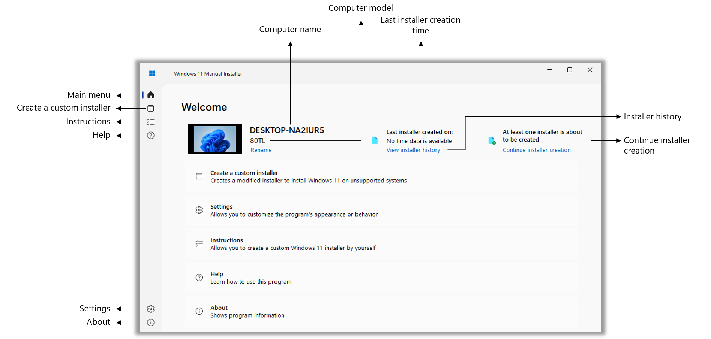To switch between options (referred to as "Panels"), the Side Panel images need to be used. In the image shown above, you can see a description of each image. You can also hover them to show a description, like shown below:

The installer creation is the program's premise (and the first option you will see on the Main Menu). It too has had a redesign from 1.0 versions. On this screen, you need to specify a Windows 11 ISO image and a Windows 10 ISO image. Later, you need to specify the name and path of the target installer.
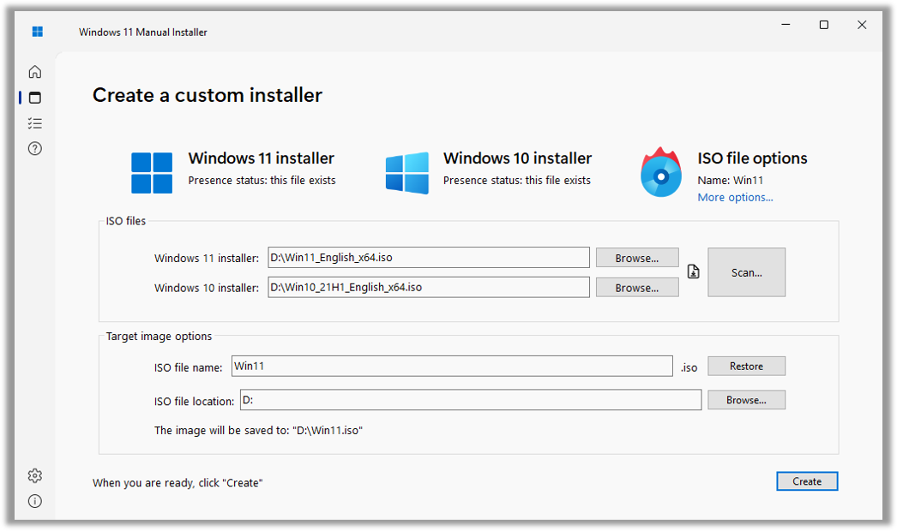Version 2.0 lets you scan a directory for ISO files, and also lets you download Windows installation images from Microsoft's website (and also build them from files downloaded from UUP Dump (uupdump.net), if administrative privileges are present)
| 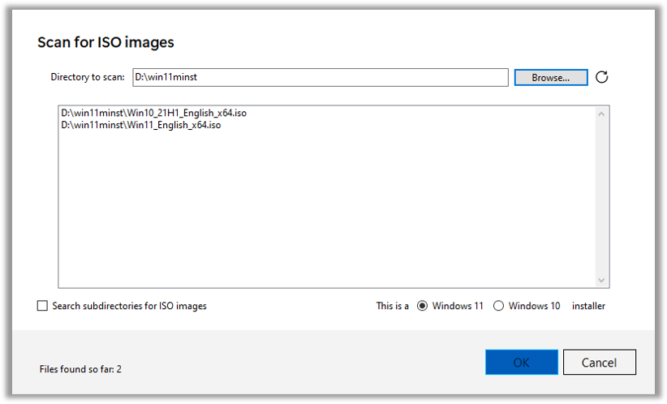 |
|
|
Clicking "More options..." will go to the functionality settings, which are mentioned later in the documentation. After specifying the source installers and the target installer options, click "Create". The program will make you confirm your settings.
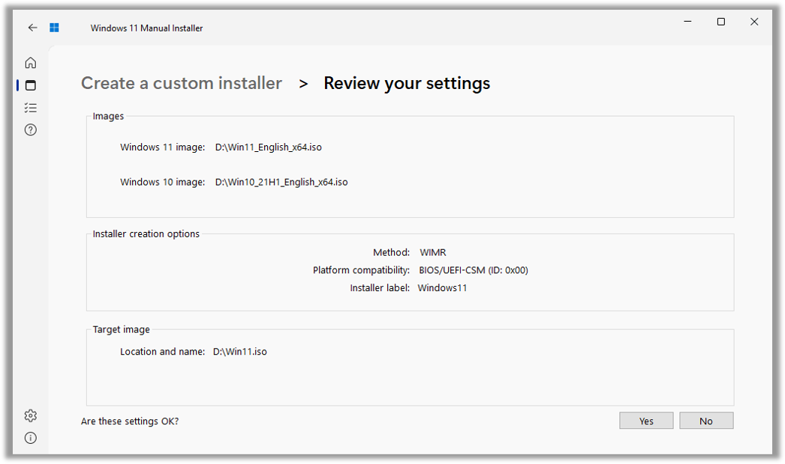If you confirm, the installer creation will take place. In Version 2.0, the installer creation process screen is not in a separate window anymore, and is now in the main window. However, the process is the same.
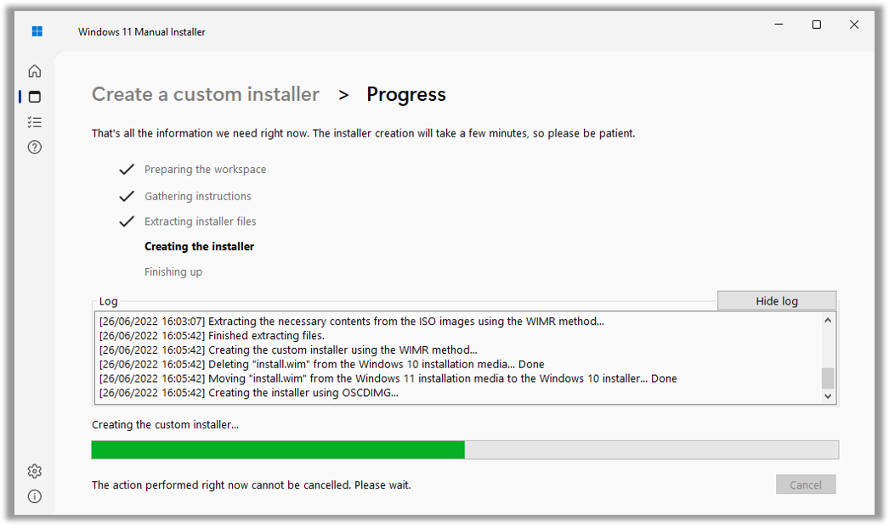One of the changes in Version 2.0 is the ability to show or hide the installer creation log, and the program no longer freezes when creating the installer. The program will also show more detailed information on completion.
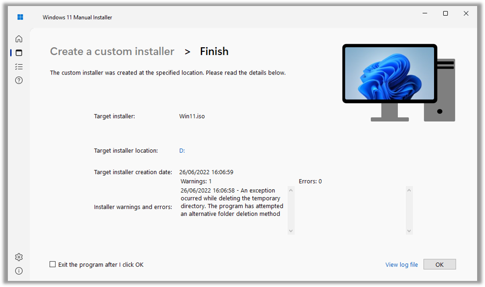There is now a shortcut to open the log file, and you can now exit the program by clicking "OK"
The program follows the philosophy: "Simple by default, but powerful when needed", meaning that you can configure it the way you like. Unlike Version 1.0.013x, settings in this version are on different sections.
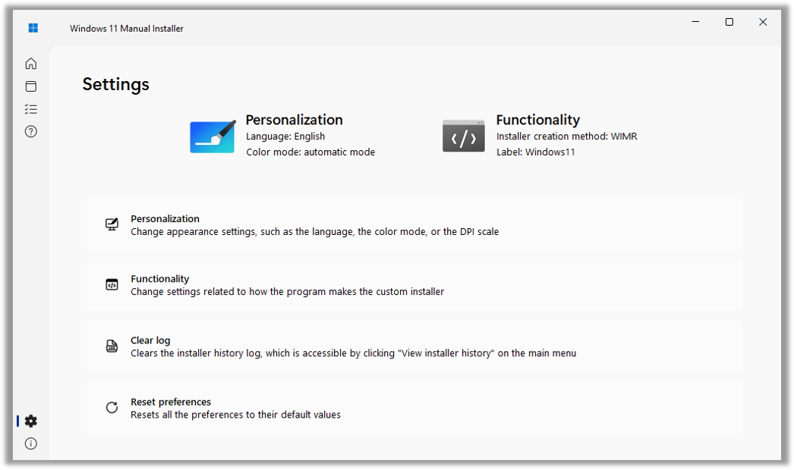The personalization options consist on:
 |
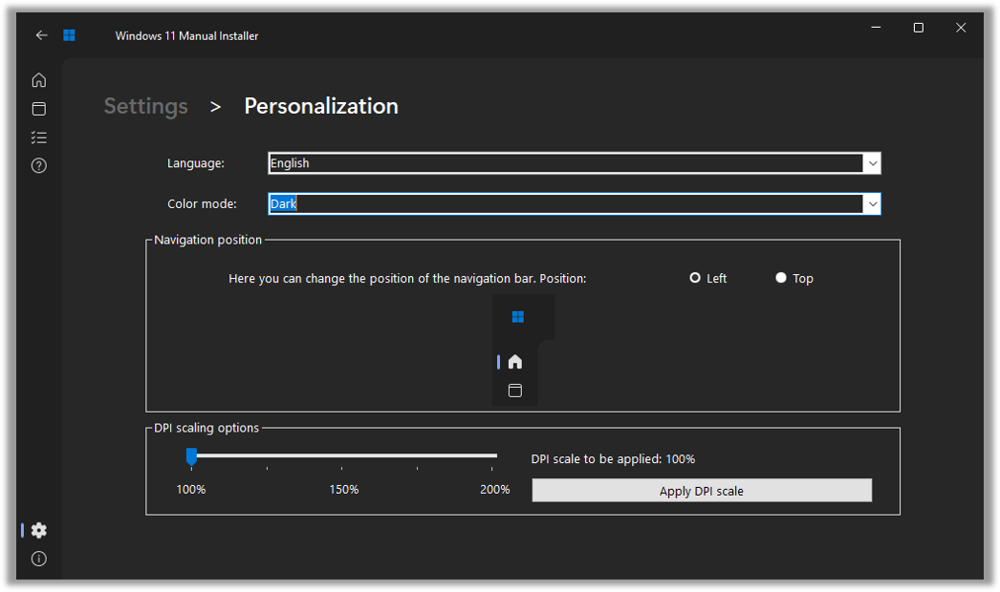 | 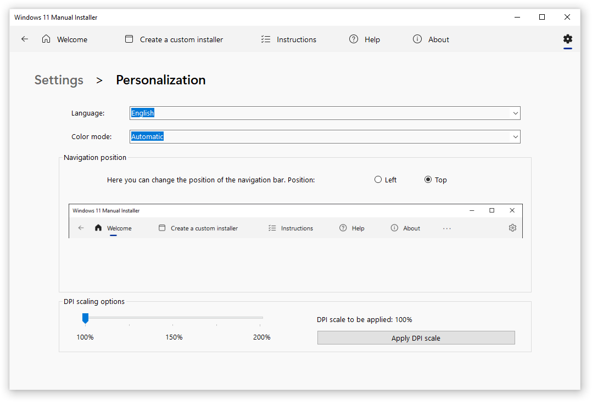 |
The functionality settings consist on:
You can also access these settings by clicking "More options..." on the installer creation screen
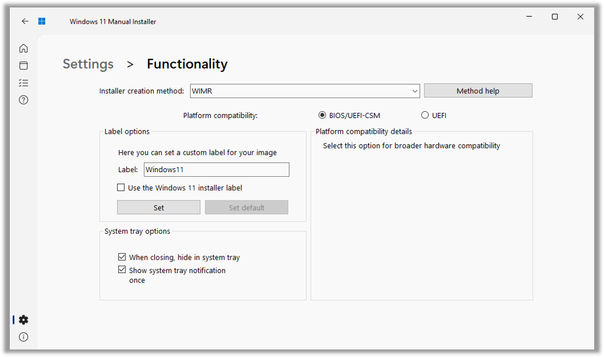This screen shows instructions on how to make a custom Windows 11 installer by yourself, while trying to be as helpful as possible.
This screen shows the Help documentation (what you are reading right now)
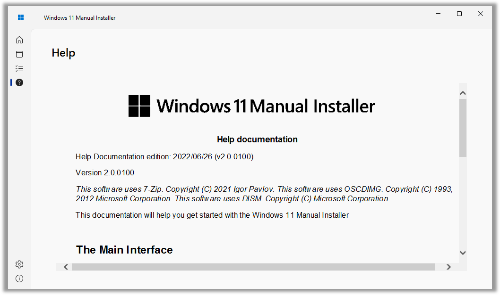Shows program information, like the product and assembly versions, the icon sources, the component versions, and where can the source code be found
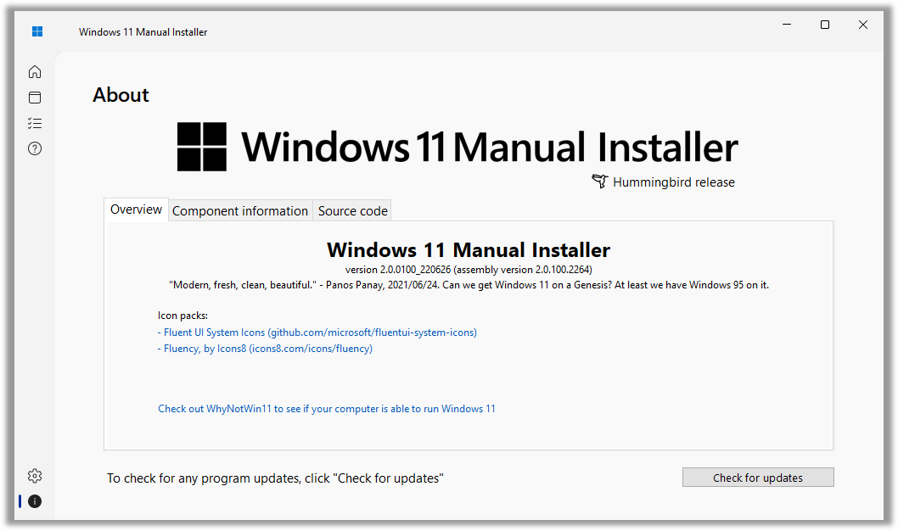The advanced options panel lets you set additional options for the REGTWEAK installer creation method. It can be useful if you want to skip signing in with a Microsoft account on Windows 11 Pro. However, this is optional, and is ONLY visible if the program is being run with admin. privileges.
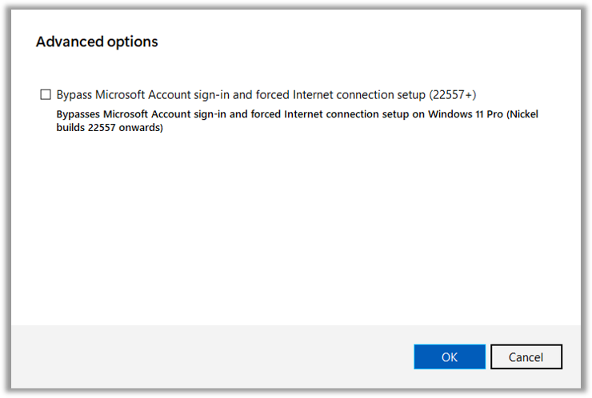The installer history lets you see your recently created installers, as well as export them to an XML, HTML or CSV file.
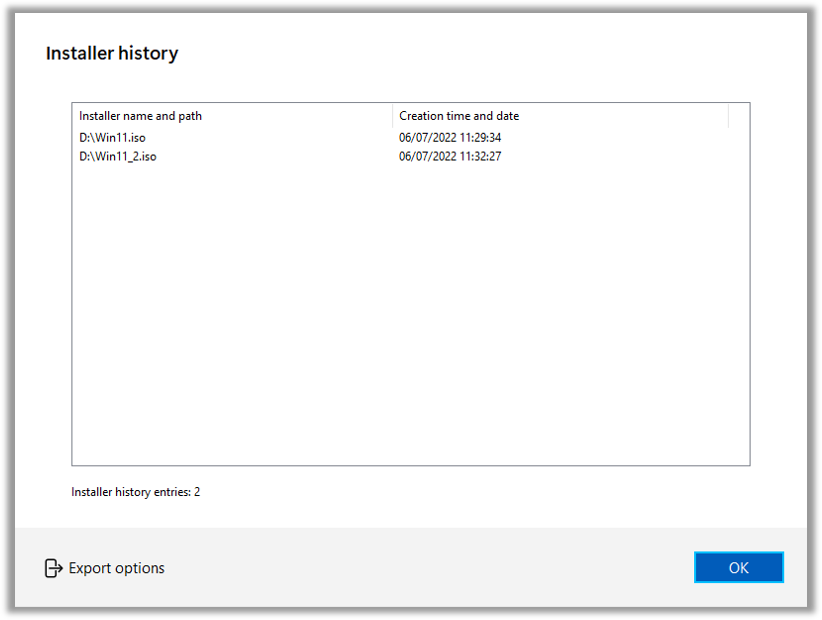Version 2.0 lets you download Windows 11 and 10 ISO files from Microsoft's website. If administrative privileges are present, the program also lets you build the images with files downloaded from UUP Dump (uupdump.net)